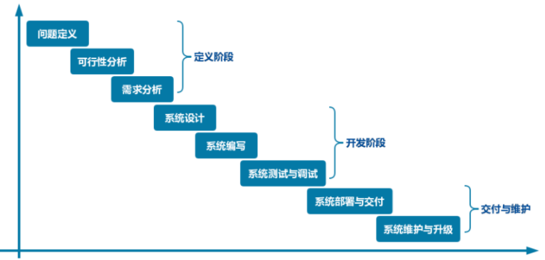
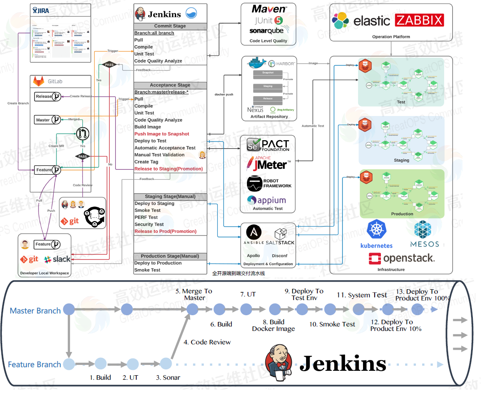
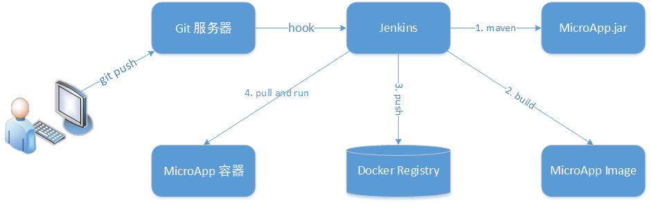

传统交付方案
传统我们的项目开发模式是产品调研提出需求，开发团队研究决定开发方案选型。然后开始一个周期的开发，模块开发完成之后开始模块间的联调。联调结束之后打包交付给测试团队。测试团队进行系统测试或自动化测试，然后提交bug，开发团队修复bug，周而复始。
传统的模式中，存在着较多的不确定因素。例如，开发环境、编译环境、测试环境、生产环境等不确定因素。人为介入打包中的不确定因素，缺乏单元测试和自动化测试的整合。从而导致的结果是，开发-测试-修复的周期较长，而且很多小的问题完全可以由单元测试进行覆盖。

持续交付
随着微服务架构与容器虚拟化技术的发展，越来越多的公司开始使用持续集成的系统来解决频繁发布带来的质量问题，使用持续交付的工具来实现代码在不同环境上的自动部署。
持续交付要求团队可以随时的发布一个新的准确版本，而且要求在编译发布的过程中进行自动化测试，通过自动化测试可以及时的发现并定位存在的bug，修复bug之后再进行快速的发布到测试环境，测试团队直接进行测试。
与传统模式的区别在于持续交付可以提前发现bug的存在和快速修复而不必等到测试人员的介入之后才发现。持续交付分解出来就是“持续”和“交付”。
持续：持续要求任何时候、任何情况都能进行准确的发布，做到准确的发布需要注意以下几个关键点：
持续应该是一个周期性的，可以是每天的某个时间点，也可以是某次代码的提交，或者某次人为触发。所以人工进行构建是不可能的，需要自动化的构建，自动化要求构建的任何一个流程都必须以脚本的形式运行，代码检出、代码构建、各模块代码单元测试、集成测试、UI自动化测试等
发布的程序版本不允许是各个模块在开发环境编译出一个版本作为交付，而要求在一个纯净的编译环境中进行构建。
构建的过程应该要求最大可能的固化，例如操作系统的版本，构建环境的版本，相关的依赖等。
避免从网络获取相关的文件，这点以nodejs为开发或编译的项目尤其重要，安装node的依赖包总是一个漫长的过程，就算有国内的源，一般的项目也需要一两分钟的node依赖包，这不符合快速构建。
交付：在持续集成完成之后，接着就是软件的交付工作，常见的交付方式一般有：
源代码交付: 源代码交付需要将源代码以 tar 包等方式 download 到服务器，然后在服务器上借助程序的构建脚本去构建可执行程序，显然这种方式会经常因服务器环境差异，构建环境初始化失败等问题导致无法构建可执行程序。严重依赖于构建脚本的完备程度。
Linux 标准包交付: 将项目的依赖通过 Linux deb 或者 rpm 来管理，由于这种方式更符合 Linux 规范，间接的提高了项目在服务器上部署的成功率，但是有些时候仍然需要解决包冲突问题。
虚拟镜像交付: 虚拟镜像交付指的是我们将项目在虚拟机里测试成功后直接将该虚拟镜像部署到服务器上。显然，这种方式部署成功率接近100%而且隔离性好。但是随之而来的问题就是虚拟镜像本身对服务器资源的消耗。
docker image 交付： docker image 交付是虚拟镜像交付的进一步演进，在保证系统隔离的同时，docker image 对服务器的资源消耗更低。当然，docker 的隔离机制是进程级别的，可能不适合一些强隔离场景。我们团队目前正在使用这种方式进行交付。
下图展示了一个典型的CI/CD的工具链，Jenkins作为业内优秀的的CI/CD工具，担任整套了工具链的核心组织工作。

CI、CD的实践方案
在持续集成方面选择Jenkins。Jenkins是一款开源软件，拥有众多优秀的插件，依靠这些插件，我们可以完成一些周期、繁琐、复杂的任务。虽然Jenkins解决了我们繁琐复杂周期性的操作，但是没有解决我们在多种环境下编译构建的需求。而这个场景正是Docker的强项。
通过Jenkins的pipeline我们可以实现代码检出、单元测试、编译、构建、发布、测试等流程的自动化，而最终通过Jenkins的Docker插件将产出物构建成镜像，方便部署到Docker环境。
在持续交付中选择了Docker image的交付方式，使用Docker有以下优点。
Docker强大的环境隔离性可以将环境和程序打包在一起，测试、运维人员无需知道我们的程序是如何配置的，只需要一条Docker 的命令就可以将我们的程序运行起来，这也更加容易实现持续部署。
减少编译环境的污染，因为Docker天然的隔离性，也避免了传统编译环境难以配置多套编译环境的问题。在基于Docker的持续发布中，我们可以在同一台宿主机上同时编译不同版本的Java项目，不同版本的Python项目，而无需任何配置，镜像也只是从docker hub中获取。
持续集成构建的docker 镜像经历了单元测试，自动化测试，但还没有接受过测试团队的严格测试。Jenkins是一个强大的持续集成工具，然而持续部署并不是Jenkins的强项，但是Jenkins拥有很多强大的插件。而且我们持续集成产出的是docker镜像，所以持续部署，我们只需要将镜像运行起来，或者利用第三方的容器管理平台提供的API进行部署。
本地部署应用到Docker：本地部署到Docker容器可以使用Jenkins的docker插件
部署到远程主机的Docker、Appsoar：Docker和Appsoar都支持开启API调用。通过现有的API我们可以运行我们生成镜像版本。从而达到持续的部署最新版本。
部署到kubernetes：kubernetes除了可以通过API调用还可以在jenkins中配置kubectl的方式创建或更新deployments。
基于Dokcer、Jenkins的CI/CD的实现
下图展示了一个简易实现的CI/CD流程，基于docker和Jenkins：
为了实现上图的CI/CD流程，需要搭建Jenkins master服务器、私有的Docker registry、Git服务器。
对于开发人员而言，相比传统发布，需要新增工作内容是在代码目录中新增Dockerfile和Jenkinsfile两个文件。Dockerfile用于应用发布时构建应用容器镜像，Jenkinsfile用于Jenkins pipeline。